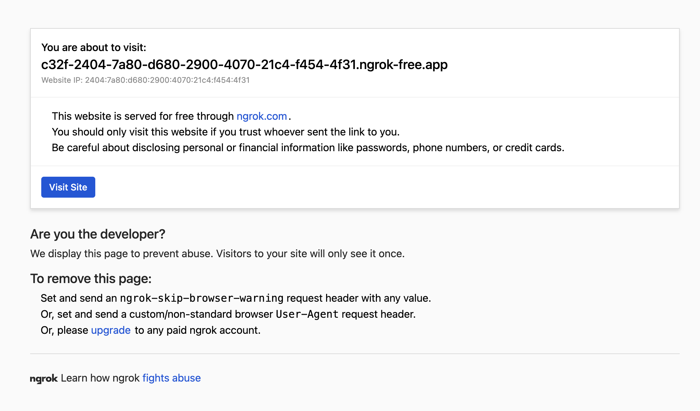
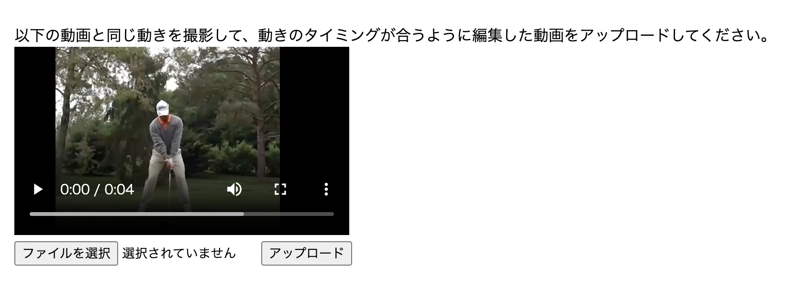
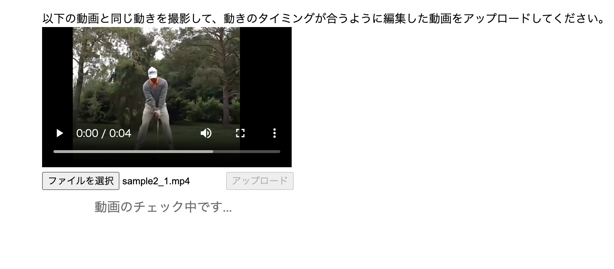

このページはWebARのフォームチェック説明ページです
※無料でできる範囲の機能のため、通信速度や動画の処理速度などは少し時間がかかります。基本的にPCでの確認を推奨します。
1. WebARのフォームチェックページを開くために、この画面の下部にあるリンクをクリックします。
2. 初めて画面を表示すると[You are about to visit]と表示されます。
3. Visit Siteボタンも表示されていれば、押してください。
4. ゴルフ動画が見れるページを表示できたら、動画を確認します。
5. 動画を確認が完了したら、動画と同じ動きを撮影し、タイミングも合うように編集します。
6. 撮影と編集が完了したら、動画ファイルを選択し、アップロードボタンを押します。
7. 処理が完了するまで待ちます。
8. 処理が完了すると２つの動画が表示されます。
この２つの動画を見て、フォームの比較をして、改善が必要かを判断します。